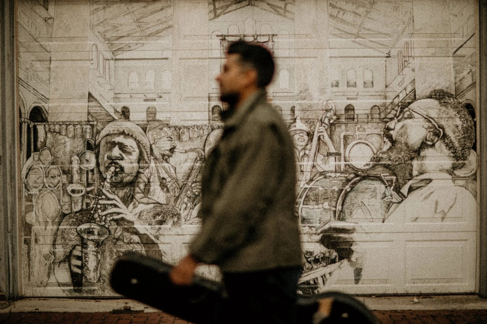

Singer-songwriter covers
Tejas Singh
Covers as a duo, a trio or a full band.
It’s a lot of fun to watch a song you love come together one guitar part at a time. Tejas Singh builds it live with a looper, a device that repeats what he’s just played, until it sounds like the whole record is playing behind his voice. You can start with a duo for dinner and have the full band join him for the dance floor.
We can fit the music to your event, including how many musicians play, which songs they choose and what they wear. Here’s how booking through Signet works.
Awards and press
In the press and on air
- RIFTrock
- Here Comes The Flood
- Rebel Spirit Music
Press · 2007
Review of his EP A Brief History, comparing his voice to Ben Harper and Ray LaMontagne
Stages and credits
- Jammin' Java, the Northern Virginia music venue (2025)
- Played more than 200 shows a year in Washington, D.C. and New York City before moving to Denver
Trusted and booked by
This is the act to book when you want one singer for your whole event. Whether Tejas is performing as a duo, as a trio or with the full band, you get sophisticated covers of your guests’ favorite songs, and his own singer-songwriter material when you want it.
As a quartet, he’s got a real dance band, with bass and drums behind him, plus keys or a second guitar.
Configurations
| Size | What it suits |
|---|---|
| DuoA singer-guitarist, plus bass | The duo can work well for cocktails and dinner. |
| TrioVoice and guitar, bass, drums | The trio is the one for a small venue, or for when you want a dance floor without a full band. |
| QuartetThe trio plus keys or a second guitar | Book the quartet when you want a lively dance floor at a wedding or a corporate party. |
Not sure which size you need? Send us the date and we’ll help you choose.
Occasions
Perfect booking for
- Office holiday parties
- The quartet is perfect for a company party with a dance floor, and it can play a downtown Denver ballroom or your own office.
- Client evenings and corporate dinners
- As a duo, Tejas can keep the same songs quiet enough for easy conversation, and that’s just right for a client dinner or a member event. If you only need an hour, we can do that, too.
- Milestones and private parties
- He’s a great pick for a milestone birthday or an anniversary, especially if you’re planning dinner and then dancing.
- Wedding cocktail hours
- The duo gives you a singer for the hour after the ceremony, and it’s a great choice when you want songs everyone knows.
Got speeches or a program? We can plan the music around them with your run of show. Curious about prices? Our cost guide lays out what live music costs across Colorado.
A sample of his song list
Here's a sample from his song list, from dinner songs to dance floor favorites. Requests are welcome.


- Three Little BirdsBob Marley & The Wailers
- Into the MysticVan Morrison
- (Sittin' On) The Dock of the BayOtis Redding
- LandslideFleetwood Mac
- Fire and RainJames Taylor
- The ScientistColdplay
- Tiny DancerElton John
- Ho HeyThe Lumineers
- Use SomebodyKings of Leon
- Brown Eyed GirlVan Morrison
- ValerieMark Ronson
- I Wanna Dance with SomebodyWhitney Houston
- Don't Stop Believin'Journey
- WonderwallOasis
- Mr. BrightsideThe Killers
- Can't Help Falling in LoveElvis Presley
- Thinking Out LoudEd Sheeran
- Tennessee WhiskeyChris Stapleton
For more, check out his full song list.
Video Clips
Watch Tejas Singh play
Here’s a Bob Marley cover he builds live, plus one of his own songs, so you can hear more of him before you book.

Venues
We’d pick Tejas Singh for live music at these venues.

Downtown Denver
Hyatt Centric Downtown Denver
A rooftop bar and patio, a cozy lobby and the Colorado Ballroom.
Played hereTejas Singh
Live music at Hyatt Centric Downtown Denver
Colorado Springs
Cheyenne Mountain Resort
The Centennial, Colorado and Remingtons ballrooms and the beach on the resort’s private lake.
Acts we'd pickClassical Strings · Tejas Singh · Little Moses Jones
Live music at Cheyenne Mountain Resort
Downtown Denver
Four Seasons Hotel Denver
The Grand Ballroom, the Cottonwood Ballroom and the third-floor Pool Terrace.
Acts we'd pickLittle Moses Jones · Tejas Singh · Dirty Flamenco
Live music at Four Seasons Hotel Denver
Colorado Springs, above Garden of the Gods
Garden of the Gods Resort and Club
The Three Graces Ballroom and Terrace, the View at Kissing Camels, the Garden Room, the Hill Room and the Reflection Pool.
Acts we'd pickClassical Strings · Tejas Singh · Meghan Clarisse
Live music at Garden of the Gods Resort
Aurora, by Denver International Airport
Gaylord Rockies Resort & Convention Center
Four ballrooms, the Mountain View Pavilion and its lawns, the Grand Lodge and the Front Range Lawn.
Acts we'd pickTejas Singh · Little Moses Jones · Quadrasonic
Live music at Gaylord Rockies
Downtown Denver
Grand Hyatt Denver
The Pinnacle Club on the 38th floor, the Colorado Ballroom and the Aspen Ballroom.
Acts we'd pickJazz Duo · Little Moses Jones · Quadrasonic
Live music at Grand Hyatt Denver
Downtown Denver
Hilton Denver City Center
The Colorado, Denver and Penrose ballrooms and an outdoor plaza.
Acts we'd pickLittle Moses Jones · Soul and R&B Band · Jazz Duo
Live music at Hilton Denver City Center
Downtown Boulder
Hotel Boulderado
The Boulderado Ballroom, the Mezzanine and the Grand Staircase, Columbine-Balsam and the Corner Bar.
Acts we'd pickClassical Strings · Tejas Singh · Jazz Duo
Live music at Hotel Boulderado
Downtown Denver, at the Colorado Convention Center
Hyatt Regency Denver at Colorado Convention Center
The Centennial Ballroom, the Capitol Ballroom, the Denver City Terrace and the Silver Room.
Acts we'd pickClassical Strings · Little Moses Jones · Soul and R&B Band
Live music at Hyatt Regency Denver
Broomfield, between Denver and Boulder
Omni Interlocken Hotel
The Interlocken and Centennial ballrooms, Ponderosa, the Outdoor Pavilion and the ceremony lawn.
Acts we'd pickClassical Strings · Dirty Flamenco · Little Moses Jones
Live music at Omni Interlocken
Downtown Boulder
St Julien Hotel & Spa
The Xanadu Ballroom, the lawn, the Redgarden terraces and Jill’s, with views of the Flatirons.
Acts we'd pickClassical Strings · Tejas Singh · René Moffatt
Live music at St Julien Hotel & Spa
Colorado Springs, at the foot of Cheyenne Mountain
The Broadmoor
The Main Ballroom, the Lake Terrace and Lakeside Terrace, Broadmoor Hall, the International Center and Cheyenne Lodge.
Acts we'd pickClassical Strings · Jazz Duo · Dirty Flamenco
Live music at the BroadmoorDowntown Denver
The Brown Palace Hotel and Spa
The Grand Ballroom, the Onyx Room, Central City, the Brown Palace Club and the atrium lobby.
Acts we'd pickTejas Singh · Jazz Duo · Dirty Flamenco
Live music at the Brown Palace
Union Station, Lower Downtown Denver
The Crawford Hotel
The Cooper Lounge, the Great Hall, the Webb Gallery and the Terminal Bar on the Plaza.
Acts we'd pickJazz Duo · Solo Guitarist · Tejas Singh
Live music at the Crawford Hotel
Westminster, between Denver and Boulder
The Westin Westminster
The Westminster, Legacy and Standley ballrooms, the Waterfall Gardens, the Lake House and the Sunset Rooftop Deck.
Acts we'd pickClassical Strings · Little Moses Jones · Quadrasonic
Live music at the Westin Westminster
Tejas Singh questions
Don’t see your question? Check out our full question list.
What does Tejas Singh play?
How loud is it?
Can we ask for a song?
Tell us about your event and when you'd like Tejas Singh to play.
We’ll reply with availability and costs, and we may have a question or two about your plans.
Want photos or video of your event? Add them to your booking.